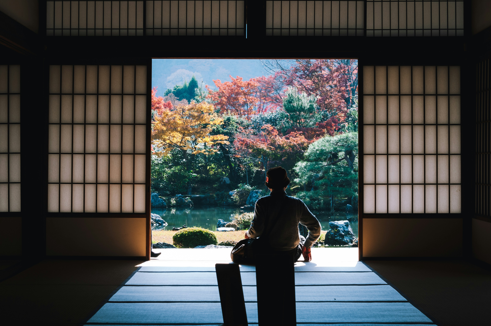

Para os amantes de história
Descubra curiosidades sobre o Japão
-

- Cultura Japonesa
- Cidade Noturna
- Paisagens
A cultura japonesa é rica e diversa, combinando tradições milenares com aspectos modernos. Fortemente influenciada por suas religiões predominantes, o xintoísmo e o budismo, a cultura valoriza a natureza, os antepassados e a espiritualidade. Práticas tradicionais como cerimônias do chá, ikebana (arranjo floral) e o teatro Noh continuam a ser apreciadas ao lado de expressões artísticas modernas, como o mangá e o anime. A etiqueta e o respeito pelos outros são pilares da sociedade japonesa, refletidos em gestos como a reverência. A gastronomia também é um destaque, com pratos como sushi, sashimi e ramen ganhando fama mundial.
----- 次の豆知識 -----

A vida noturna no Japão é vibrante e diversificada, oferecendo uma ampla gama de opções para todos os gostos. Nas grandes cidades, como Tóquio e Osaka, bairros como Shinjuku, Roppongi e Shibuya são famosos por seus bares, izakayas (bares tradicionais), casas noturnas e karaokês, onde grupos de amigos se reúnem para cantar e socializar. Além disso, há bares temáticos e clubes de jazz que atraem tanto locais quanto turistas. A vida noturna japonesa mistura tradição e modernidade, desde ambientes tranquilos para beber saquê até festas animadas que duram até o amanhecer.
----- 次の豆知識 -----

As paisagens do Japão são incrivelmente variadas, combinando beleza natural e cultural. O país é conhecido por suas montanhas majestosas, como o icônico Monte Fuji, que oferece vistas deslumbrantes, especialmente durante o amanhecer. Campos de arroz em terraços, lagos serenos e florestas de bambu criam cenários pitorescos que mudam com as estações. Na primavera, as cerejeiras em flor (sakura) transformam o país em um mar rosa, enquanto no outono, as folhas vermelhas e douradas das árvores proporcionam uma vista espetacular. Além disso, o Japão tem jardins zen, templos e santuários que estão perfeitamente integrados à natureza, criando uma atmosfera de tranquilidade e harmonia.
----- 次の豆知識 -----
O Japão é conhecido por curiosidades únicas, como os "hotéis cápsula", onde as pessoas dormem em pequenos compartimentos. O país também possui vending machines que vendem desde bebidas até flores. Com uma das menores taxas de criminalidade do mundo, é comum ver bicicletas sem cadeado. Além disso, muitos banheiros têm tecnologia avançada, como assentos aquecidos. Outro destaque são os trens bala, famosos por sua rapidez e pontualidade, alcançando até 320 km/h.